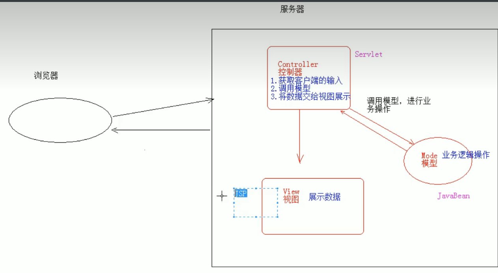
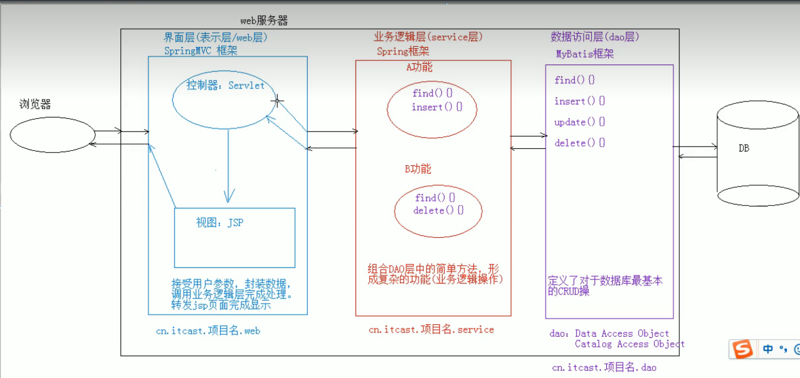

# JSP：入门学习
概念：
- Java Server Pages： java 服务器端页面
- 可以理解为：一个特殊的页面，其中既可以指定定义 html 标签，又可以定义 java 代码
- 用于简化书写！！！
- Java Server Pages： java 服务器端页面
原理
- JSP 本质上就是一个 Servlet
JSP 的脚本：JSP 定义 Java 代码的方式
- <% 代码 %>：定义的 java 代码，在 service 方法中。service 方法中可以定义什么，该脚本中就可以定义什么。
- <%! 代码 %>：定义的 java 代码，在 jsp 转换后的 java 类的成员位置。
- <%= 代码 %>：定义的 java 代码，会输出到页面上。输出语句中可以定义什么，该脚本中就可以定义什么。
JSP 的内置对象：
- 在 jsp 页面中不需要获取和创建，可以直接使用的对象
- jsp 一共有 9 个内置对象。
- 今天学习 3 个：
- request
- response
- out：字符输出流对象。可以将数据输出到页面上。和 response.getWriter () 类似
- response.getWriter () 和 out.write () 的区别：
- 在 tomcat 服务器真正给客户端做出响应之前，会先找 response 缓冲区数据，再找 out 缓冲区数据。
- response.getWriter () 数据输出永远在 out.write () 之前
- response.getWriter () 和 out.write () 的区别：
# 指令
- 作用：用于配置 JSP 页面，导入资源文件
- 格式：
<%@ 指令名称 属性名 1 = 属性值 1 属性名 2 = 属性值 2 ... %> - 分类：
page ： 配置 JSP 页面的
* contentType：等同于 response.setContentType ()- 设置响应体的 mime 类型以及字符集
- 设置当前 jsp 页面的编码（只能是高级的 IDE 才能生效，如果使用低级工具，则需要设置 pageEncoding 属性设置当前页面的字符集）
* import：导包 * errorPage：当前页面发生异常后，会自动跳转到指定的错误页面 * isErrorPage：标识当前也是是否是错误页面。 * true：是，可以使用内置对象exception * false：否。默认值。不可以使用内置对象exceptioninclude ： 页面包含的。导入页面的资源文件
- <%@include file="top.jsp"%>
taglib ： 导入资源
* <%@ taglib prefix="c" uri="http://java.sun.com/jsp/jstl/core" %>
* prefix：前缀，自定义的
# 注释
- html 注释：
<!-- -->: 只能注释 html 代码片段 - jsp 注释：推荐使用
<%-- --%>：可以注释所有
# 内置对象
- 在 jsp 页面中不需要创建，直接使用的对象
- 一共有 9 个：
变量名 真实类型 作用- pageContext PageContext 当前页面共享数据，还可以获取其他八个内置对象
- request HttpServletRequest 一次请求访问的多个资源 (转发)
- session HttpSession 一次会话的多个请求间
- application ServletContext 所有用户间共享数据
- response HttpServletResponse 响应对象
- page Object 当前页面 (Servlet) 的对象 this
- out JspWriter 输出对象，数据输出到页面上
- config ServletConfig Servlet 的配置对象
- exception Throwable 异常对象
# MVC：开发模式
jsp 演变历史
- 早期只有 servlet，只能使用 response 输出标签数据，非常麻烦
- 后来又 jsp，简化了 Servlet 的开发，如果过度使用 jsp，在 jsp 中即写大量的 java 代码，有写 html 表，造成难于维护，难于分工协作
- 再后来，java 的 web 开发，借鉴 mvc 开发模式，使得程序的设计更加合理性
MVC：
- M：Model，模型。JavaBean
- 完成具体的业务操作，如：查询数据库，封装对象
- V：View，视图。JSP
- 展示数据
- C：Controller，控制器。Servlet
- 获取用户的输入
- 调用模型
- 将数据交给视图进行展示
- M：Model，模型。JavaBean
- 优缺点：
优点：
- 耦合性低，方便维护，可以利于分工协作
- 重用性高
缺点：
- 使得项目架构变得复杂，对开发人员要求高

# EL 表达式
概念：Expression Language 表达式语言
作用：替换和简化 jsp 页面中 java 代码的编写
语法：$
注意：
- jsp 默认支持 el 表达式的。如果要忽略 el 表达式
- 设置 jsp 中 page 指令中：isELIgnored="true" 忽略当前 jsp 页面中所有的 el 表达式
- ${表达式} ：忽略当前这个 el 表达式
- jsp 默认支持 el 表达式的。如果要忽略 el 表达式
使用：
运算：
- 运算符：
- 算数运算符： + - * /(div) %(mod)
- 比较运算符： > < >= <= == !=
- 逻辑运算符： &&(and) ||(or) !(not)
- 空运算符： empty
- 功能：用于判断字符串、集合、数组对象是否为 null 或者长度是否为 0
- ${empty list}: 判断字符串、集合、数组对象是否为 null 或者长度为 0
- ${not empty str}: 表示判断字符串、集合、数组对象是否不为 null 并且 长度 > 0
- 运算符：
获取值
- el 表达式只能从域对象中获取值
- 语法：
- ${域名称。键名}：从指定域中获取指定键的值
* 域名称： 1. pageScope --> pageContext 2. requestScope --> request 3. sessionScope --> session 4. applicationScope --> application（ServletContext） * 举例：在request域中存储了name=张三 * 获取：${requestScope.name}${键名}：表示依次从最小的域中查找是否有该键对应的值，直到找到为止。
获取对象、List 集合、Map 集合的值
1. 对象：$- 本质上会去调用对象的 getter 方法
2. List集合：${域名称.键名[索引]} 3. Map集合： * ${域名称.键名.key名称} * ${域名称.键名["key名称"]}隐式对象：
- el 表达式中有 11 个隐式对象
- pageContext：
- 获取 jsp 其他八个内置对象
- ${pageContext.request.contextPath}：动态获取虚拟目录.
- 获取 jsp 其他八个内置对象
# JSTL
概念：JavaServer Pages Tag Library JSP 标准标签库
- 是由 Apache 组织提供的开源的免费的 jsp 标签 <标签>
作用：用于简化和替换 jsp 页面上的 java 代码
使用步骤：
- 导入 jstl 相关 jar 包
- 引入标签库：taglib 指令： <%@ taglib %>
- 使用标签
常用的 JSTL 标签
if: 相当于 java 代码的 if 语句
- 属性：
- test 必须属性，接受 boolean 表达式
- 如果表达式为 true，则显示 if 标签体内容，如果为 false，则不显示标签体内容
- 一般情况下，test 属性值会结合 el 表达式一起使用
- test 必须属性，接受 boolean 表达式
- 注意：
* c:if标签没有else情况，想要else情况，则可以在定义一个c:if标签
- 属性：
2. choose:相当于java代码的switch语句 1. 使用choose标签声明 相当于switch声明 2. 使用when标签做判断 相当于case 3. 使用otherwise标签做其他情况的声明 相当于default 3. foreach:相当于java代码的for语句 1. 完成重复的操作 for(int i = 0; i < 10; i ++){ } * 属性： begin：开始值（包含） end：结束值（包含） var：临时变量 step：步长 varStatus:循环状态对象 index:容器中元素的索引，从0开始 count:循环次数，从1开始 2. 遍历容器 List<User> list; for(User user : list){ } * 属性： items:容器对象 var:容器中元素的临时变量 varStatus:循环状态对象 index:容器中元素的索引，从0开始 count:循环次数，从1开始练习：
- 需求：在 request 域中有一个存有 User 对象的 List 集合。需要使用 jstl+el 将 list 集合数据展示到 jsp 页面的表格 table 中
# 三层架构：软件设计架构
- 界面层 (表示层)：用户看的得界面。用户可以通过界面上的组件和服务器进行交互
- 业务逻辑层：处理业务逻辑的。
- 数据访问层：操作数据存储文件。

# 案例：用户信息列表展示
- 需求：用户信息的增删改查操作
- 设计：
- 技术选型：Servlet+JSP+MySQL+JDBCTempleat+Duird+BeanUtilS+tomcat
- 数据库设计：
create database day17; -- 创建数据库
use day17; -- 使用数据库
create table user( -- 创建表
id int primary key auto_increment,
name varchar(20) not null,
gender varchar(5),
age int,
address varchar(32),
qq varchar(20),
email varchar(50)
);
开发：
环境搭建
- 创建数据库环境
2. 创建项目，导入需要的 jar 包
- 创建数据库环境
编码
测试
部署运维